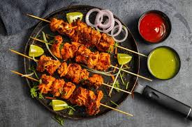

A creamy, spicy curry with tender chicken pieces in rich tomato gravy.
View RecipeChicken Tikka Masala is a classic Indian-inspired dish known for its bold flavors and comforting texture. Juicy pieces of chicken are first marinated in yogurt and spices, then grilled or pan-cooked to achieve a smoky flavor. These pieces are then added to a rich, creamy tomato gravy seasoned with traditional spices like garam masala, turmeric, and chili powder. The dish is finished with fresh cream, giving it a smooth and luxurious taste. It pairs perfectly with naan, roti, or steamed rice, making it a complete and satisfying meal loved by food enthusiasts worldwide.
Marinate chicken with yogurt & spices for 1 hour.
Cook the chicken until golden and tender.
Prepare rich tomato gravy with spices.
Add cooked chicken into the gravy.
Add cream, simmer and serve hot.
Chicken Tikka consists of bite-sized pieces of chicken that are marinated in a mixture of yogurt and spices, then grilled or baked to perfection. The marinade typically includes ingredients like red chili, ginger, garlic, garam masala, and lemon juice, which infuse the chicken with bold flavors and a slight tanginess. Traditionally cooked in a tandoor oven for that authentic smoky taste, but can also be prepared on a grill or in the oven. It's often served with mint chutney, onion rings, and lemon wedges, making it a popular appetizer or main dish.
Marinate chicken pieces with yogurt, spices, and lemon juice for 2 hours.
Thread chicken onto skewers.
Grill or bake at 400°F for 20-25 minutes, turning occasionally.
Serve hot with chutney and onions.
"The Chicken Tikka Masala recipe is spot on! My family loved it."
- Emily R.
"Easy instructions and delicious results. Will make again!"
- David L.
"Perfect for beginners. The Chicken Tikka turned out amazing."
- Priya S.
Have questions or feedback? Reach out to us!
Email: info@spicekitchen.com
Phone: +1 (234) 567-8900
Follow us on social media for more recipes!